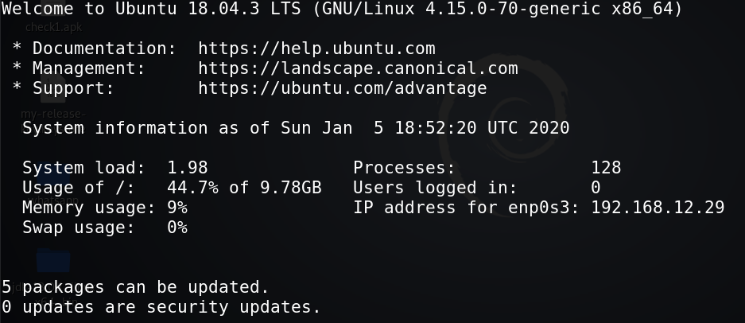

7. SSH
Log in ssh with user “flag” and password “topsecret”.
Output:

Trying some commands like “cd” you'll realize thy are restricted. The reason is the shell type. To see what shell are this user in, type:
Output:
/bin/rbash
“-rbash” is The Restricted Shell is a Linux Shell that restrict some of the features of the bash shell.
 Index
Index